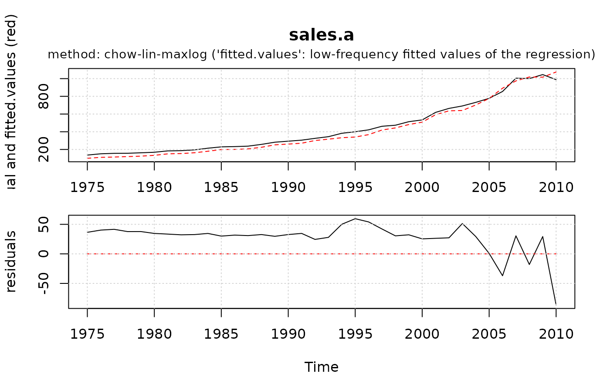

Perform temporal disaggregation or interpolation of low frequency to high
frequency time series. td can be used with objects of class
"ts", with numeric vectors or with any
ts-boxable time series object.
Usage
td(
formula,
conversion = "sum",
to = "quarterly",
method = "chow-lin-maxlog",
truncated.rho = 0,
fixed.rho = 0.5,
criterion = "proportional",
h = 1,
start = NULL,
end = NULL,
...
)Arguments
- formula
an object of class
"formula": a symbolic description of the the temporal disaggregation model. The details of model specification are given under 'Details'.- conversion
type of conversion:
"sum","mean"(or:"average"),"first"or"last".- to
high-frequency destination frequency as a character string (
"quarter"(or"quarterly"),"month"(or"monthly"),"day","hour","minute","second", or"year") or as a scalar (e.g.2,4,7,12). Required if no right hand side indicator series is provided. The tsbox package must be installed to deal with frequencies other than monthly or quarterly. If the input series are numeric,tois a scalar indicating the frequency ratio.- method
method of temporal disaggregation:
"chow-lin-maxlog","chow-lin-minrss-ecotrim","chow-lin-minrss-quilis","chow-lin-fixed","dynamic-maxlog"(experimental),"dynamic-minrss"(experimental),"dynamic-fixed"(experimental),"fernandez","litterman-maxlog","litterman-minrss","litterman-fixed","denton-cholette","denton","fast","uniform"or"ols". See 'Details'.- truncated.rho
lower bound for the autoregressive parameter \(\rho\). If set to
0(default), no negative values are allowed. If set to-1, truncation is disabled.- fixed.rho
set a predefined autoregressive parameter \(\rho\). Only works with the methods
"chow-lin-fixed"and"litterman-fixed".- criterion
minimzation criterion for Denton methods:
"proportional"or"additive". See 'Details'.- h
degree of differencing for Denton methods. See 'Details'.
- start
(optional) start date. Similar to pre-processing the input series with
window().- end
(optional) end date. Similar to pre-processing the input series with
window().- ...
additional arguments to be passed to the low level subfunctions.
Value
td returns an object of class "td".
The function predict() computes the interpolated
high frequency series. If the high-frequency indicator series are longer
than the low-frequency series, the resulting series will be extrapolated.
The function coefficients extracts the coefficients. The function
residuals extracts the low frequency residuals. The function
summary() prints a summary of the estimation.
An object of class "td" is a list containing the following
components:
- values
disaggregated or interpolated (and extrapolated) high frequency series
- fitted.values
low frequency fitted values of the regression; low frequency indicator for the Denton methods.
- p
preliminary high frequency series
- residuals
low-frequency residuals
- rho
autoregressive parameter, \(\rho\)
- truncated
logical, whether \(\rho\) has been truncated
- coefficients
a named vector of coefficients
- se
standard errors of the coefficients
- s_2
ML-estimator of the variance of the high-frequency residuals
- s_2_gls
GLS-estimator of the variance of the high-frequency residuals
- tss
weighted (low frequency) total sum of squares
- rss
weighted (low frequency) residual sum of squares
- r.squared
R squared
- adj.r.squared
adjusted R squared
- logl
log-likelihood
- aic
Akaike information criterion
- bic
Schwarz information criterion
- rank
number of right hand variables (including intercept)
- df
degrees of freedom
- method
method of temporal disaggregation
- call
function call
- name
name of the low frequency variable
- fr
the ratio of high to low-frequency series
- conversion
type of temporal conversion
- actual
actual values of the low frequeny series
- model
a matrix containing the indicators (and a constant if present)
- criterion
minimization criterion in Denton methods
- h
order of differencing in Denton methods
Details
td is used to disaggregate or interpolate a low frequency to a higher
frequency time series, while either the sum, the average, the first or the
last value of the resulting high-frequency series is consistent with the low
frequency series. Disaggregation can be performed with or without the help of
one or more right hand side indicator series. It can deal with both with
a regular disaggregation setting (e.g. quarters to months) but also with
an irregular disaggregation setting (e.g. months to days), where it respects
the the different lengths of the months.
If the high-frequency indicator(s) cover(s) a longer time span than the low-frequency series, an extrapolation or retropolation (Wei, 1994, p. 138) is performed, using the same model as for interpolation.
The selection of a temporal disaggregation model is similar to the selection
of a linear regression model. Thus, td closely mirrors the working of
the lm() function. The left hand side of the
formula() denotes the low-frequency series, the right hand side
the indicators. If no indicator is specified, the right hand side must be set
equal to 1 (see examples). Unlike lm, td handles
ts() and mts time-series objects, as a typical application
involves the use of these objects. Alternatively, If used with basic vectors,
the to argument specifies the ratio between the high and the low
frequency series.
For the generalized least squares (GLS) methods "chow-lin-maxlog",
"chow-lin-minrss-ecotrim", "chow-lin-minrss-quilis",
"litterman-maxlog" and "litterman-minrss", an autoregressive
parameter \(\rho\) is estimated. Default (and recommended) method is
chow-lin-maxlog. With truncated.rho = 0 (default), it produces
good results for a wide range of applications.
There are two variants of the chow-lin-minrss approach that lead to
different results: Ecotrim by Barcellan (2003) uses a correlation matrix
instead of the variance covariance matrix (implemented in
"chow-lin-minrss-ecotrim"), the Matlab library by Quilis (2009)
multiplies the correlation matrix with \(1/(1-\rho^2)\) (implemented in
"chow-lin-minrss-quilis").
The methods "dynamic-maxlog", "dynamic-minrss" and
"dynamic-fixed" are dynamic extensions of Chow-Lin (Santos Silva and
Cardoso, 2001). If the autoregressive parameter \(\rho\) is equal to 0, no
truncation remainder is added.
The Denton methods "denton" and "denton-cholette" can be
specified with one or without an indicator. The parameter h can be set
equal to 0, 1, or 2. Depending on the value, the
denton procedure minimizes the sum of squares of the deviations
between the levels (0), the first differences (1) or the second
differences (2) of the indicator and the resulting series.
Additionally, criterion can be set equal to "proportional" or
"additive", depending on whether the proportional or the absolute
deviations should be considered for minimzation. "denton-cholette"
removes the transient movement of the original "denton" method at the
beginning of the resulting series. "fast" is a shortcut for
"chow-lin-fixed" with fixed.rho = 0.99999. It returns approximately the
same results as "denton-cholette" with h = 1, but is much faster.
"uniform" is a special case of the "denton" approach, with
h equals 0 and criterion equals "additive".
It distributes the residuals uniformly. If no indicator is used, this leads
to a step-shaped series.
"ols" performs an ordinary least squares regression (OLS) and
distributes the residuals uniformly. It is especially useful for comparing
the estimators of GLS and OLS regressions.
References
Chow, G. C., & Lin, A. L. (1971). Best linear unbiased interpolation, distribution, and extrapolation of time series by related series. The review of Economics and Statistics, 372-375.
Denton, F. T. (1971). Adjustment of monthly or quarterly series to annual totals: an approach based on quadratic minimization. Journal of the American Statistical Association, 66(333), 99-102.
Santos Silva, J. M. C. & Cardoso, F. N. (2001). The Chow-Lin method using dynamic models. Economomic Modelling, 18, 269-280.
Wei, W. W. S. (1994). Time series analysis. Addison-Wesley publ.
Sax, C. und Steiner, P. (2013). Temporal Disaggregation of Time Series. The R Journal, 5(2), 80-88. doi:10.32614/RJ-2013-028
See also
ta() for temporal aggregation, the inverse function of
td.
summary() is used to obtain and print a summary of
the results.
predict() is used to extract the disaggregated or
interpolated high frequency series.
plot() is used to plot the fitted and actual low
frequency series, as well as the residuals.
Examples
data(tempdisagg)
# one indicator, no intercept
mod1 <- td(sales.a ~ 0 + exports.q)
summary(mod1) # summary statistics
#>
#> Call:
#> td(formula = sales.a ~ 0 + exports.q)
#>
#> Residuals:
#> Min 1Q Median 3Q Max
#> -86.57 29.00 32.27 36.81 59.55
#>
#> Coefficients:
#> Estimate Std. Error t value Pr(>|t|)
#> exports.q 0.0141601 0.0003428 41.31 <2e-16 ***
#> ---
#> Signif. codes: 0 ‘***’ 0.001 ‘**’ 0.01 ‘*’ 0.05 ‘.’ 0.1 ‘ ’ 1
#>
#> 'chow-lin-maxlog' disaggregation with 'sum' conversion
#> 36 low-freq. obs. converted to 158 high-freq. obs.
#> Adjusted R-squared: 0.9362 AR1-Parameter: 0.862
plot(mod1) # residual plot of regression

plot(predict(mod1))
# interpolated quarterly series
# temporally aggregated series is equal to the annual value
all.equal(window(
ta(predict(mod1), conversion = "sum", to = "annual"),
start = 1975), sales.a)
#> [1] TRUE
# several indicators, including an intercept
mod2 <- td(sales.a ~ imports.q + exports.q)
# no indicator (Denton-Cholette)
mod3 <- td(sales.a ~ 1, to = "quarterly", method = "denton-cholette")
# no indicator (uniform)
mod4 <- td(sales.a ~ 1, to = "quarterly", method = "uniform")
# Dynamic Chow-Lin (Santos Silva and Cardoso, 2001)
# (no truncation parameter added, because rho = 0)
mod5 <- td(sales.a ~ exports.q, method = "dynamic-maxlog")
# Example from Denton (1971), see references.
d.q <- ts(rep(c(50, 100, 150, 100), 5), frequency = 4)
d.a <- ts(c(500, 400, 300, 400, 500))
a1 <- predict(td(d.a ~ 0 + d.q, method = "denton",
criterion = "additive", h = 0))
#> 'denton-cholette' removes the transient movement at the beginning of the series and is preferable to the original 'denton' method in most cases.
a2 <- predict(td(d.a ~ 0 + d.q, method = "denton",
criterion = "additive", h = 1))
#> 'denton-cholette' removes the transient movement at the beginning of the series and is preferable to the original 'denton' method in most cases.
a3 <- predict(td(d.a ~ 0 + d.q, method = "denton",
criterion = "additive", h = 2))
#> 'denton-cholette' removes the transient movement at the beginning of the series and is preferable to the original 'denton' method in most cases.
a4 <- predict(td(d.a ~ 0 + d.q, method = "denton",
criterion = "additive", h = 3))
#> 'denton-cholette' removes the transient movement at the beginning of the series and is preferable to the original 'denton' method in most cases.
p1 <- predict(td(d.a ~ 0 + d.q, method = "denton",
criterion = "proportional", h = 0))
#> 'denton-cholette' removes the transient movement at the beginning of the series and is preferable to the original 'denton' method in most cases.
p2 <- predict(td(d.a ~ 0 + d.q, method = "denton",
criterion = "proportional", h = 1))
#> 'denton-cholette' removes the transient movement at the beginning of the series and is preferable to the original 'denton' method in most cases.
p3 <- predict(td(d.a ~ 0 + d.q, method = "denton",
criterion = "proportional", h = 2))
#> 'denton-cholette' removes the transient movement at the beginning of the series and is preferable to the original 'denton' method in most cases.
p4 <- predict(td(d.a ~ 0 + d.q, method = "denton",
criterion = "proportional", h = 3))
#> 'denton-cholette' removes the transient movement at the beginning of the series and is preferable to the original 'denton' method in most cases.
# Table in Denton (1971), page 101:
round(cbind(d.q, a1, a2, a3, a4, p1, p2, p3, p4))
#> d.q a1 a2 a3 a4 p1 p2 p3 p4
#> 1 Q1 50 75 67 62 59 56 57 55 54
#> 1 Q2 100 125 127 125 123 122 124 122 120
#> 1 Q3 150 175 180 182 184 200 194 194 195
#> 1 Q4 100 125 126 130 134 122 125 129 132
#> 2 Q1 50 50 65 70 74 50 58 61 62
#> 2 Q2 100 100 105 106 107 100 107 109 111
#> 2 Q3 150 150 145 142 141 150 146 145 144
#> 2 Q4 100 100 85 81 78 100 89 85 83
#> 3 Q1 50 25 27 24 22 44 40 39 38
#> 3 Q2 100 75 73 72 71 78 74 73 72
#> 3 Q3 150 125 123 124 125 100 109 110 111
#> 3 Q4 100 75 78 80 81 78 77 78 79
#> 4 Q1 50 50 37 38 39 50 43 43 43
#> 4 Q2 100 100 96 96 96 100 94 94 94
#> 4 Q3 150 150 154 155 154 150 153 154 153
#> 4 Q4 100 100 112 112 111 100 110 110 110
#> 5 Q1 50 75 69 68 67 56 58 58 58
#> 5 Q2 100 125 124 123 123 122 123 121 122
#> 5 Q3 150 175 178 178 178 200 190 189 190
#> 5 Q4 100 125 129 132 132 122 129 131 130
if (FALSE) { # \dontrun{
# Using altvernative time series classes (see https://docs.ropensci.org/tsbox/)
library(tsbox)
sales.a.xts <- ts_xts(window(sales.a, start = 2000))
exports.q.xts <- ts_xts(window(exports.q, start = 2000))
mod1b <- td(sales.a.xts ~ 0 + exports.q.xts)
predict(mod1b) # class 'xts'
# non-standard frequencies: decades to years
predict(td(ts_xts(uspop) ~ 1, "mean", to = "year", method = "fast"))
# quarter to daily (no indicator)
m.d.noind <- td(gdp.q ~ 1, to = "daily", method = "fast")
predict(m.d.noind)
# quarter to daily (one indicator)
m.d.stocks <- td(gdp.q ~ spi.d, method = "chow-lin-fixed", fixed.rho = 0.9)
predict(m.d.stocks)
} # }